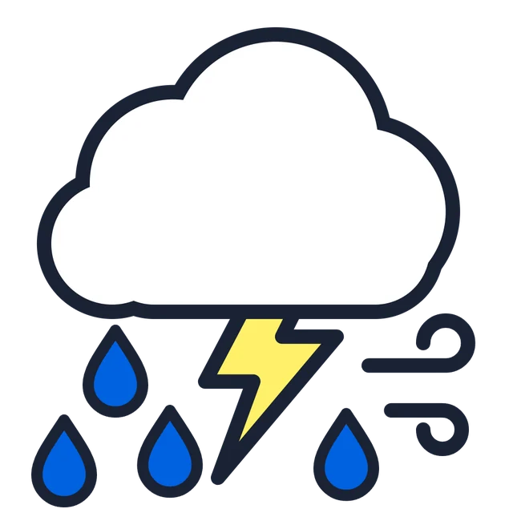

Hoe klinkt een onweersbui? Eerst vallen er een paar druppels. Dan gaat het waaien, de regen wordt harder, en ineens rommelt de donder.
Al die geluiden maak je zelf, met je lijf. We nemen ze op, en dan maak je er samen een hele storm van.
Kies een geluid en druk op Opnemen. Maak het geluid met de hele klas. Na tien seconden stopt het vanzelf. Bovenaan zie je wat je hebt opgenomen: schuif de twee strepen om te kiezen welk stuk steeds herhaald wordt. Neem je opnieuw op, dan is het oude geluid weg.
Zijn alle vier de geluiden opgenomen? Begin dan met alleen de druppels, en schuif er langzaam de wind, de harde regen en de donder bij. Laat de bui daarna weer wegtrekken, tot je alleen nog een paar druppels hoort.